무선설비기사 (2006-08-06 기출문제)
1과목: 디지털 전자회로
1. 그림과 같은 CE 증폭기의 동작점 (Q)에서 전류 ICQ와 VCEQ의 값을 구하면? (단, TR의 VBE(ON)=0.7[V], IC=IE로 간주한다.)
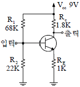
- ICQ=1.0[mA], VCEQ=4.5[V]
- ICQ=1.5[mA], VCEQ=4.8[V]
- ICQ=1.8[mA], VCEQ=4.2[V]
- ICQ=2.0[mA], VCEQ=5.0[V]
(정답률: 알수없음)

2. 1000kHz의 반송파에 40kHz의 저주파 신호파로 진폭변조 시켰을 때, 상측파대의 최고 주파수와 하측파대의 최저 주파수의 차는 얼마인가?
- 20kHZ
- 40kHZ
- 60kHZ
- 80kHZ
(정답률: 알수없음)
3. 다음 중 발진회로에 수정진동자를 사용하는 가장 큰 이유는? (단, Q : Qualiy factor)
- 발진주파수가 낮기 때문이다.
- Q의 값이 높기 때문이다.
- 안정도가 가변하기 때문이다.
- 발진주파수를 임의로 변화시킬 수 있기 때문이다.
(정답률: 알수없음)
4. 이상적인 연산 증폭기의 R2에 흐르는 전류 I는? (단, R1=2[㏀], R2=3[㏀], Vi=4[V] 이다.)
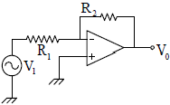
- 0.2[mA]
- 0.5[mA]
- 2[mA]
- 5[mA]
(정답률: 알수없음)
5. 다음에 설명한 각종 복조회로에 대한 설명 중 틀린 것은?
- PAM파는 복조 과정에서 대역여파기를 사용한다.
- PLL회로는 FM검파에 이용 가능하다.
- SSB의 신호 복조는 동기검파가 이용된다.
- 포락선 검파기의 부하회로의 시정수가 과대하면 Diagonal Clipping이 생긴다.
(정답률: 알수없음)
6. 슈미트 트리거 회로에 입력파형으로 주기적인 정현파를 인가할 때, 출력파형은 어떠한 파형이 되는가?
- 정현파
- 삼각파
- 구형파
- 타원파
(정답률: 알수없음)
7. 어떤 논리회로에서 입력은 A, B, C이며 출력은 입력 중에서 둘 이상이 1일 때, 출력 Y가 1이 된다면 이 논리 회로의 논리식은?
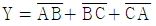
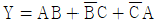
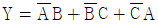
- Y=AB+BC+CA
(정답률: 알수없음)
8. 4변수들에 대한 카르노도(Karnaugh)가 그림과 같이 주어졌을 경우 이를 부울식으로 표현하면?
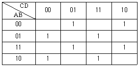
- A⊕B⊕C⊕D
- (A+B)⊕(C+D)
- (A⊕B)+(C⊕D)
- AB⊕CD
(정답률: 알수없음)
9. 비동기식 모드(mode)-13 계수기를 만들려면 최소한 몇 개의 플립플롭이 필요한가?
- 13
- 7
- 4
- 2
(정답률: 알수없음)
10. 다음 TR의 접속방식에 대한 설명 중 틀린 것은?
- 전압, 전류이득이 모두 1보다 큰 것은 CE 접속방식이다.
- CB 접속방식은 전압이득이 거의 1이다.
- CC 접속방식은 입력저항이 크고 출력저항이 작다.
- CB 접속방식은 입력저항이 작고 출력저항이 크다.
(정답률: 알수없음)
11. 어떤 증폭기에서 입력전압이 5[mV]이고 출력전압이 2[V]일 경우 이 증폭기의 전압 증폭도는 약 몇 [dB]인가?
- 28[dB]
- 40[dB]
- 52[dB]
- 66[dB]
(정답률: 알수없음)
12. 다음 연산증폭회로에서 출력전압 V0는?
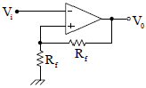
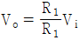
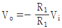
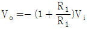
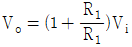
(정답률: 알수없음)
13. 다음 그림의 논리회로와 등가인 회로는?
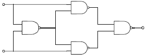
- Half adder
- Full adder
- Exclusive OR
- Exclusive NOR
(정답률: 알수없음)
14. 그림과 같은 다이오드 게이트(diode gate)의 출력(Y)은 약 얼마인가?
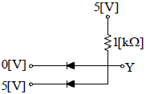
- 0[V]
- 5[V]
- 10[V]
- 60[V]
(정답률: 알수없음)
15. 60[V]로 충전되어 있는 1[μF] 콘덴서를 1[MΩ] 의 저항을 통하여 방전시키면 1초 후의 콘덴서 양단의 전압은 약 얼마인가?
- 10[V]
- 22[V]
- 36[V]
- 6[V]
(정답률: 알수없음)
16. 다음 중 적분회로로 사용할 수 있는 회로는?
- 저역통과 RC회로
- 고역통과 RC회로
- 대역통과 RC회로
- 대역소거 RC회로
(정답률: 알수없음)
17. 일반적인 부궤환(negative feedback) 증폭기의 특성을 설명한 것으로 틀린 것은?
- 전달이득(transfer gain)이 감소된다.
- 잡음이 감소된다.
- 비직선 일그러짐이 감소된다.
- 입력저항(RiF)이 항상 증대된다.
(정답률: 알수없음)
18. 논리식
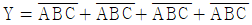
를 간략하게 구성한 회로는?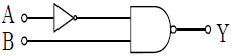
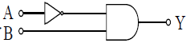
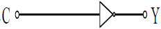
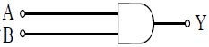
(정답률: 알수없음)
19. 변조신호의 주파수가 fm인 경우 협대역 FM(Varrow-band FM)의 대역폭은?
- 약 fm
- 약 2fm
- 약 4fm
- 무한대
(정답률: 알수없음)
20. RS플립-플롭 정논리회로의 설명으로 틀린 것은?
- 2개의 입력 R,S와 2개의 출력
 를 갖는다.
를 갖는다. - 입력 R,S가 모두 저레벨일 때 출력
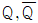
는 전상태를 유지한다. - S가 고레벨일 때
 가 모두 저레벨로 된다.
가 모두 저레벨로 된다. - R과 S가 같이 고레벨이면 출력은 불확정이다.
(정답률: 알수없음)
2과목: 무선통신 기기
21. 다음은 수신기의 중간주파수를 높게 선정하면 개선되는 것이다. 맞지 않는 것은?
- 감도 및 안정도 개선
- 인입현상 개선
- 영상주파수 선택도 개선
- 충실도 개선
(정답률: 알수없음)
22. 오실로스코프(Oscilloscope)의 수직축과 수평축 입력에 주파수와 진폭이 같고 위상이 180° 다른 전압을 가했을 때 나타나는 리사쥬 도형(Lissajous Pattern)은?
- 사선
- 원
- 타원
- 사각형
(정답률: 알수없음)
23. 마이크로파 송신기의 전력 측정에 사용되는 방향성 결합기를 이용하여 측정할 수 없는 것은?
- 정재파비
- 위상차
- 결합도
- 반사계수
(정답률: 알수없음)
24. 그림과 같은 수퍼헤테로다인 수신기에서 제1중간주파수가 10[MHz]이고, 제2중간주파수가 500[KHz]라고 할 때 30[MHz]의 입력신호를 수신하려면 A와 B의 발진 주파수는?
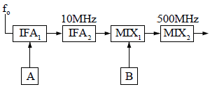
- A:20[MHz], B:9.5[MHz]
- A:20[MHz], B:20.5[MHz]
- A:30[MHz], B:10[MHz]
- A:20[MHz], B:12.5[MHz]
(정답률: 알수없음)
25. 기본파의 진폭이 10[mA]이고, 제2 고조파와 제3 고조파의 진폭이 각각 2[mA], 1[mA] 일 때 왜율은?
- 약 15.8[%]
- 약 7.5[%]
- 약 14.3[%]
- 약 22.4[%]
(정답률: 알수없음)
26. FM 송신기에서 사용되는 pre-emphasis 회로에 관한 설명 중 가장 타당한 것은?
- 변조신호의 높은 주파수 성분을 낮게 하여 변조한다.
- 선택도가 개선되어 공전의 방해를 감소시킨다.
- 전력증폭기의 효율을 높이기 위하여 사용한다.
- S/N비를 향상시키는 효과가 있다.
(정답률: 알수없음)
27. 무선 송신기에서 사용하지 않는 회로는?
- 변조회로
- 뮤팅(Muting)회로
- 완충 증폭회로
- 전력 증폭회로
(정답률: 알수없음)
28. FM 수신기는 신호파의 입력이 없으면 큰 잡음이 발생한다. 이를 제거하기 위해 신호파가 없을 경우 저주파 증폭기의 출력을 차단하는 기법을 사용하는데 이 회로의 명칭은 무엇인가?
- 리미터(Limitter)
- 스켈치(Squelch) 회로
- 주파수변별기(Discriminator)
- De-emphasis 회로
(정답률: 알수없음)
29. DSB 통신방식과 비교하였을 때 SSB 통신방식의 특징 중 틀린 것은?
- 송, 수신기의 회로구성이 복잡하다.
- 높은 주파수 안정도를 필요로 한다.
- 신호대 잡음비가 나빠진다.
- 가격이 고가이다.
(정답률: 알수없음)
30. 다음 정류방식 중 맥동률이 가장 적은 방식은?
- 단상전파 방식
- 단상반파 방식
- 3상 전파 방식
- 3상 반파 방식
(정답률: 알수없음)
31. 전원장치의 출력 직류전압이 100[V], 출력 교류 전압이 3.5[V]인 경우 맥동율은?
- 0.35%
- 3.5%
- 35%
- 350%
(정답률: 알수없음)
32. 다음 중 수신기의 직선성을 보호하고 출력 레벨을 거의 일정하게 하는 수신기의 보조회로는?
- AGC
- ATC
- BFC
- AFC
(정답률: 알수없음)
33. 그림은 안테나의 실효 인덕턴스 측정회로이다. 실효 인덕턴스 Le값은? (단, Ls는 6[μH] 이며, S를 닫았을 때 공진주파수는 3[MHz], 열었을 때 공진주파수는 1.5[MHz]이었다.)
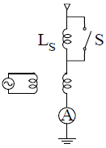
- 4[μH]
- 1[μH]
- 6[μH]
- 2[μH]
(정답률: 알수없음)
34. 다음 중 무선송신기에 사용되는 발진기의 조건으로 맞지 않는 것은?
- 주파수 안정도가 높을 것
- 부하의 변동에 대한 영향이 적을 것
- 고조파 발생이 많을 것
- 주파수의 미세조정이 용이할 것
(정답률: 알수없음)
35. 후단 회로의 동작상태가 변화하여 발진 주파수의 변동이 생기는 것을 방지할 목적으로 설치하는 증폭기는?
- 완충 증폭기
- 저 잡음 증폭기
- C급 증폭기
- 종단 전력 증폭기
(정답률: 알수없음)
36. 무선송신기에서 발생하는 스퓨리어스 복사의 감소 대책이 아닌 것은?
- 급전선에 트랩을 설치한다.
- π형 회로를 사용하여 고조파의 불요파를 제거한다.
- 전력 증폭단의 바이어스전압을 알게 하거나 여진전압을 가급적 적게 한다.
- 전력증폭단과 기타공진회로의 Q를 작게 하여 불요 주파수를 제거하도록 한다.
(정답률: 알수없음)
37. 다음 중 통신위성의 원리와 거리가 먼 것은?
- 만유인력법칙
- 지구의 자전주기
- 지구의 공전주기
- 궤도운동
(정답률: 알수없음)
38. FM 검파기의 분류 중 주파수 변화에 따르는 VCO의 제어 신호를 검출하는 방법에 해당되는 것은?
- PLL 검파기
- Foster-seeley 검파기
- Ratio 검파기
- Quadrature 검파기
(정답률: 알수없음)
39. 무선통신에 사용되는 스펙트럼 확산통신방식의 특징으로 가장 타당한 것은?
- 도청으로부터 메시지 보호가 유리하다.
- 고전력 스펙트럼이 필요하다.
- 주로 대용량 M/W 시스템에 적용한다.
- 주파수 대역폭이 극히 좁다.
(정답률: 알수없음)
40. 검파기의 부하가 직류와 교류의 시정수가 상이 해짐으로서 발생되는 파형왜곡은?
- Negative Peak Clipping
- 포락선 왜곡
- Diagonal Clipping
- 하강 경사 왜곡
(정답률: 알수없음)
3과목: 안테나 공학
41. 전송선로에서 종단을 단락 햇을 때 측정한 임피던스가 328[Ω] 이라면 선로의 특성임피던스는?
- 약 713[Ω]
- 약 723 Ω]
- 약 733 Ω]
- 약 743[Ω]
(정답률: 알수없음)
42. 다음 중 접지 안테나의 능률을 나쁘게 하는 것은?
- 복사 저항을 작게 한다.
- 코로나 손을 작게 한다.
- 접지 저항을 작게 한다.
- 실효고를 높인다.
(정답률: 알수없음)
43. 초단파대 이상의 전파특성에서 가시거리 이상으로 전파 되는 초가시거리 전파와 관계가 적은 것은?
- 전리층산란파
- 대류권산란파
- F층 투과파
- 산악회절이득
(정답률: 알수없음)
44. 그림은
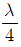
결합기를 나타낸 것이다. 맞는 관계식은?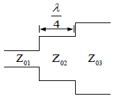
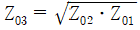
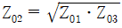
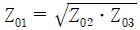
- Z01=Z02ㆍZ03
(정답률: 알수없음)
45. 반파장 다이플 안테나의 복사저항은 약 몇 [ Ω]인가?
- 35
- 50
- 73
- 97
(정답률: 알수없음)
46. 동조급전선에 대한 설명 중 틀린 것은?
- 급전선상에 정재파가 있다.
- 전송효율이 비동조 급전선보다 나쁘다.
- 송신기와의 거리가 가까울 때 쓰인다.
- 송신기와의 결합에 정합장치가 필요하다.
(정답률: 알수없음)
47. 수신안테나를 공진시켜 손실 저항이 0인 상태로 할 때 안테나의 최대 실효면적 (max, efffective aperture) Aem과 최대 산란면적(max, scattering aperture) Asm 간의 관계가 옳은 것은?
- Asm = Aem
- Asm = 2Aem
- Asm = 3Aem
- Asm = 4Aem
(정답률: 알수없음)
48. 폴디드 다이폴(folded dipole)안테나에 관한 설명 중 틀린 것은?
- 반파장 다이폴 변형으로 급전점 임피던스를 낮게 할 수 있다.
- 75[ Ω] 급전선과 정합시키려면 4:1 Balun이 있어야 한다.
- 안테나의 이득은 반파장 다이폴과 같다.
- 단파에도 사용되나 주로 텔레비전 또는 초단파용 안테나로 사용한다.
(정답률: 알수없음)
49.
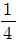
파장 수직접지 안테나에 있어서 실제 안테나의 길이가 16[m]일 경우 이 안테나의 실효높이는?- 약 0.6[m]
- 약 5.1[m]
- 약 10.2[m]
- 약 12.2[m]
(정답률: 알수없음)
50. 1MHz의 AM 방송을
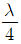
다이폴 안테나로 수신하려면 이 안테나의 길이는 어느 정도가 되어야 하는가?- 0.75[m]
- 7.5[m]
- 75[m]
- 750[m]
(정답률: 알수없음)
51. 어떤 시각 지구상의 두 지점간의 통신 가능한 주파수를 알 수 있도록 나타낸 것은?
- 한국표준시간표
- 그리니치(greenwich) 시간표
- 전파예보곡선
- 전리층 전자밀도 곡선
(정답률: 알수없음)
52. 델린저(dellinger) 현상의 특징으로 맞지 않는 것은?
- 자외선의 이상(異常)증가로 발생한다.
- 발생지역은 저위도 지방이 심하다.
- 1.5[MHz]~20[MHz] 정도의 단파통신에 영향을 준다.
- E층 또는 D층의 전자밀도가 감소한다.
(정답률: 알수없음)
53. Parabola 안테나의 반치각 θ를 구하는 식은? ( K: 상수, λ : 파장, D : 개구직경)
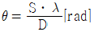
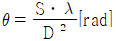
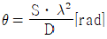
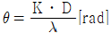
(정답률: 알수없음)
54. 레이더의 안테나로부터 목표물을 향하여 전파를 발사하여 수신하는데 0.1[μs] 가 걸렸다면 목표물까지의 거리는 얼마인가?
- 5[[m]
- 15[m]
- 25[m]
- 35[m]
(정답률: 알수없음)
55. 평행 2선식 급전선에 관한 설명 중 틀린 것은?
- 동일 전력을 전송하는 경우 동축급전선보다 선간 전압이 높다.
- 일반적으로 동축급전선보다 특성 임피던스가 높다.
- 감쇠정수는 √f에 비례한다.
- 단위길이당 인덕턴스값이
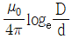
[H/m]이다.
(정답률: 알수없음)
56. 박쥐날개형 안테나를 직각으로 배치하여 구성한 것으로 여러 단을 적립하여 사용하며, 단위 안테나의 표면적이 넓게 되므로 실효적으로 안테나의 Q가 저하하여 광대역 특성을 갖게 되는 안테나는?
- 헤리칼 안테나
- 어골형 안테나
- 슈퍼 턴스타일 안테나
- 슈퍼 게인 안테나
(정답률: 알수없음)
57. 방향 탐지용 안테나로 적합하지 않는 것은?
- 애드콕 안테나(Adcock antenna)
- 루프 안테나(Loop antenna)
- 벨리니 토시 안테나(Bellini-Tosi antenna)
- 웨이브 안테나(Wave antenna)
(정답률: 알수없음)
58. 지구의 실제 반경을 r, 등가지구반경을 R, 등가지구 반경계수를 K라고 할 때, 이들은 어떤 관계식을 갖는가?
- R=Kr
- R=Kr2
- R=Kr3
- R=K√r
(정답률: 알수없음)
59. 롬빅(rhombic) 안테나의 특징으로 맞지 않는 것은?
- 단방향성 안테나로 예리한 지향특성을 갖는다.
- 도선 양측의 복사위상은 동상이며 부엽이 적다.
- 진행파 안테나로 10~13[db]정도의 상대이득을 얻을 수 있다.
- 효율이 나쁘고 넓은 설치장소를 필요로 한다.
(정답률: 알수없음)
60. 전리층에서 반사될 때 받는 제2종 감쇠의 특징을 바르게 설명한 것은?
- MUF 근처에서 감쇠가 최대로 되며, 파장이 길수록 심하다.
- MUF 근처에서 감쇠가 최대로 되며, 파장이 짧을수록 심하다.
- MUF 근처에서 감쇠가 최소로 되며, 파장이 길수록 심하다.
- MUF 근처에서 감쇠가 최소로 되며, 파장이 짧을수록 심하다.
(정답률: 알수없음)
4과목: 무선통신 시스템
61. 이동통신에서 이동체의 움직임에 따라 수신신호 주파수가 변하는 현상은?
- 지역확산현상
- 음영현상
- 채널간섭현상
- 도플러현상
(정답률: 알수없음)
62. 다음 중 위성통신 관련 기본 파라미터 G/T에 대한 설명으로 옳은 것은?
- G는 안테나 직경이다.
- T는 안테나 무게이다.
- G/T는 증폭능력을 평가한다.
- G/T는 안테나의 성능을 평가한다.
(정답률: 알수없음)
63. 이동통신에서 이동하는 가입자의 위치를 관리하기 위한 데이터베이스와 관계되는 것은?
- VLR, HLR
- BSC, VLR
- MSC, HLR
- MS, PS수
(정답률: 알수없음)
64. 무선통신시스템의 간섭을 경감하기 위한 방법으로 가장 관계 없는 것은?
- 반송파 간격의 적정배치
- 안테나의 지향성 개선
- 치국선정시 적절한 차폐물 이용
- 전파경로의 고정화
(정답률: 알수없음)
65. 다음 중 전송계층에 해당되는 프로토콜은?
- UDP
- TELNET
- FTP
- SNMP
(정답률: 알수없음)
66. 다음 통신방식 중 멀티플 엑세스 방식을 사용하는 것은?
- 위성 통신방식
- SSB 통신방식
- TV 전송방식
- M/W 통신방식
(정답률: 알수없음)
67. 다음 중 공전(대기잡음)이 아닌 것은?
- 클릭(Click)
- 험(Hum)
- 그라인더(Grinder)
- 힛싱(Hissing)
(정답률: 알수없음)
68. 전단의 이득과 잡음지수가 각각 8.4[db], 6[db]이고, 후단의 이득과 잡음지수가 각각 9.4[db], 10[db]인 증폭기가 있을 때 종합잡음지수는 약 얼마인가?
- 5[db]
- 6[db]
- 7[db]
- 8[db]
(정답률: 알수없음)
69. M/W 통신이나 원거리 고정국 사이의 단파통신에 있어서 페이딩을 방지하는 방법으로 사용하는 다이버시티 수신방식이 아닌 것은?
- 진폭 다이버시티
- 공간 다이버시티
- 편파 다이버시티
- 주파수 다이버시티
(정답률: 알수없음)
70. 이동통신에서 주파수의 스펙트럼을 효율적으로 이용하기 위한 셀룰라(Cellular) 방식에 대한 설명이 틀린 것은?
- 소 Zone 방식으로 늘어나는 통신수요를 충족하기 위한 방법이다.
- 동일한 주파수를 인접되지 않은 Cell에 할당하여 재이용 한다.
- Cell을 분할하여 기지국 송신출력을 더욱 적게 한다.
- 전체 주파수 채널을 지역적으로 분할된 몇개의 광역 Zone으로 분할하는 방법이다.
(정답률: 알수없음)
71. 다음 중 채널 용량을 늘리는 방법으로 틀린 것은?
- 대역폭을 줄인다.
- 신호의 세력을 높인다.
- 잡음 세력을 줄인다.
- 신호대 잡음비를 개선시킨다.
(정답률: 알수없음)
72. AM 방송국에서 반송파의 전력이 40[kW]이고, 변조도가 0.707인 경우에 총 출력 전력은 약몇 [kW]인가?
- 50
- 60
- 70
- 80
(정답률: 알수없음)
73. 지구자계의 영향에 의해 전리층이 비등방성 매질로 되어 있으므로 전리층을 통과하는 전파는 편파면이 회전하게 된다. 이것을 무엇이라 하는가?
- 패러데이 회전
- 표피 효과
- 플라즈마층
- 페이딩
(정답률: 알수없음)
74. 마이크로파 통신에서 주파수 체배용으로 사용되는 다이오드는?
- 터널 다이오드(Tunnel Diode)
- 실리콘 접합다이오드(Silicon Junction Diode)
- 바랙터 다이오드(Varactor Diode)
- 실리콘 포인트 컨택 다이오드(Silicon Point Diode)
(정답률: 알수없음)
75. ATM의 셀은 몇 바이트(BTYE)로 구성되는가?
- 53바이트
- 46바이트
- 38바이트
- 26바이트
(정답률: 알수없음)
76. 백색 잡음하에서의 최적 필터는 무엇인가?
- 정합 필터
- 가우스 필터
- 적분 필터
- 미분 필터
(정답률: 알수없음)
77. 셀룰라 시스템에서 사용되는 핸드오버에 관한 설명으로 옳은 것은?
- 가입자가 이동중 소속된 셀에서 다른 셀로 이동할 때 연속적으로 서비스를 받도록 변경시켜 주는 기능이다.
- 외국인이 한국에서 서비스를 받도록 제공해주는 기능이다.
- 사용자가 가입된 사업자 영역을 벗어나 타 사업권에서 서비스를 받는 기능이다.
- 인고우이성을 이용한 세계 전체를 한 서비스권으로 하는 기능을 말한다.
(정답률: 알수없음)
78. 다음 국내 아날로그 지상파 TV의 전송방식은?
- UCL
- NTSC
- PAL
- SECAM
(정답률: 알수없음)
79. 초단파 전파에서 가시거리 내에서의 전계 강도에 영향을 주는 사항이 아닌 것은?
- 사용 주파수
- 송ㆍ수신 거리
- 공중선의 높이
- 등가지구 반경 계수
(정답률: 알수없음)
80. OSI 계층 중 종단간(END TO END)에 신뢰성 있고 투명한 데이터 전송을 제공하는 계층은?
- 물리계층
- 트랜스포트계층
- 응용계층
- 프리젠테이션계층
(정답률: 알수없음)
5과목: 전자계산기 일반 및 무선설비기준
81. 캐시메모리(Cache Memory)의 매핑(mapping)방법이 아닌 것은?
- Direct mapping
- Indirect mapping
- Associative mapping
- Set-associative mapping
(정답률: 알수없음)
82. Queue의 구조 중 오른쪽과 왼쪽에서 삽입연산이 가능하도록 만들어진 Queue의 변형된 구조를 무엇이라 하는가?
- Stack
- Point
- Deque
- Buffer
(정답률: 알수없음)
83. 중앙처리장치의 메이저 스테이션 중 기억장치로부터 주소를 읽은 후 그것이 직접주소인지 간접 주소인지를 시험하고 그에 따른 적절한 동작을 하는 스테이션은?
- FECTH 스테이션
- EXECUTE 스테이션
- INDIRECT 스테이션
- INTERRUPT 스테이션
(정답률: 알수없음)
84. Micro processor에서 다음 실행할 번지가 저장되는 곳은?
- Buffer register
- Program counter
- Accumulator
- Instruction register
(정답률: 알수없음)
85. 다음 프로그램 중 처리 프로그램이 아닌 것은?
- 언어번역 프로그램
- 사용자 프로그램
- 서비스 프로그램
- 감시 프로그램
(정답률: 알수없음)
86. 연산장치에서 뺄셈을 계산할 때 사용하는 방법은?
- 피감수에서 감수를 직접 뺀다.
- 보수(complement)를 사용하여 덧셈 계산한다.
- 시프트(shift) 방법을 이용하여 감산한다.
- 비트 마스크(bit mark)방법을 사용하여 감산한다.
(정답률: 알수없음)
87. EBCDIC 코드로 숫자를 표현할 때 앞의 4bit(ZONE 부분)는?
- 1111
- 1110
- 1101
- 1000
(정답률: 알수없음)
88. 누산기(Accumulator)의 역할은?
- 연산 명령의 해독 장치
- 연산 명령의 기억 장치
- 연산 결과의 일시 기억 장치
- 연산 명령 순서의 기억 장치
(정답률: 알수없음)
89. 다음 중에서 8비트 부호화 절대값 표현 방법에 의하여 +10과 -10을 올바르게 표현한 것은?
- +10 : 00001010, -10 : 10001010
- +10 : 10001010, -10 : 00001010
- +10 : 00011010, -10 : 00001010
- +10 : 10001010, -10 : 11001010
(정답률: 알수없음)
90. Spooling을 설명한 것으로 가장 타당한 것은?
- 자료를 발생 즉시 처리하는 방식이다.
- 느린 장치로 출력할 때 디스크 등의 보조기억장치에 저장하고 그 장치를 출력에 연결하는 방식이다.
- 자료를 일정기간 모아서 한번에 처리하는 방식이다.
- 여러개의 처리기를 이용하여 여러 가지 작업을 동시에 처리하는 방식이다.
(정답률: 알수없음)
91. 정보통신기기인증규칙에 의한 “형식검정 대상기기”에 해당되는 것은?
- 무선 CATV용 무선설비의 기기
- fkeld부이의 기기
- 주파수공용 무선전화장치
- 네비텍스 수신기
(정답률: 알수없음)
92. 다음 중 전파형식별 공중선전력의 표시로서 잘못 연결된 것은?
- AlA-PX
- J3E-PX
- R3E-PX
- A3E-PX
(정답률: 알수없음)
93. 지정된 공중선 전력을 500W로 하고 허용편차를 상한 5%, 하한 10%라 할 때 공중선 전력의 허용 편차의 값은?
- 하한 450W에서 상한 525W 까지
- 하한 475W에서 상한 525W 까지
- 하한 475W에서 상한 550W 까지
- 하한 450W에서 상한 550W 까지
(정답률: 알수없음)
94. 주파수 150MHz의 무선설비로써 공중선전력 2와트를 초과하는 고정국의 주파수 허용편차는? (단, 단위 : 백만분율)
- 3
- 6
- 8
- 10
(정답률: 알수없음)
95. 다음 중 전파이용 중ㆍ장기계획에 포함되어야 할 사항이 아닌 것은?
- 주파수 대역별 용도
- 주파수 대역별 이용현황
- 전파자원에 관한 국내 이용계획의 변경
- 새로운 전파자원의 개발 현황
(정답률: 알수없음)
96. 전파관계법에서 규정한 송신설비의 구성은?
- 송신장치와 변조설비
- 송신장치와 전원설비
- 송신장치와 송신공중선계
- 송신장치와 방송송출장치
(정답률: 알수없음)
97. 형식검정의 합격 또는 형식등록을 취소하거나 생산중지 등의 조치를 명할 수 있는 경우가 아닌 것은?
- 허위 기타의 부정한 방법으로 형식검정에 합격하거나 형식등록을 한 때
- 형식검정의 합격 또는 형식등록 후 생산기기가 기준에 적합하지 않을 때
- 전기통신기본법에 의한 형식승인을 얻어 전기통신기자재를 생산한 때
- 형식검정 합격표시 또는 형식등록 표시를 하지 않거나 허위로 표시한 때
(정답률: 알수없음)
98. 수신설비로부터 부차적으로 발사되는 전파의 세기는 수신공중선과 전기적 상수가 같은 의사공중선회로를 사용하여 측정한 경우에 그 값이 얼마 이하여야 하는가?
- -10 데시벨밀리와트
- -27 데시벨밀리와트
- -30 데시벨밀리와트
- -54 데시벨밀리와트
(정답률: 알수없음)
99. 다음 중에서 정보통신기기가 인증규칙에서 “인증표시”에 해당되지 않는 것은?
- 형식승인표시
- 형식등록표시
- 전자파적합등록표창
- 전파환경측정표시
(정답률: 알수없음)
100. 인증대상 정보통신 기기로서 정보통신부장관이 행하는 형식검정을 받아야 하는 경우는?
- 국내에서 판매하지 아니하고 수출용으로 제작하는 경우
- 외국으로부터 도입하는 선박 또는 항공기에 설치된 경우
- 여행자가 판매를 목적으로 외국에서 구입하여 국내에 반입한 경우
- 연구ㆍ시험을 위하여 제조하거나 수입하는 경우
(정답률: 알수없음)